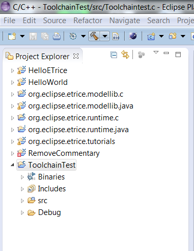
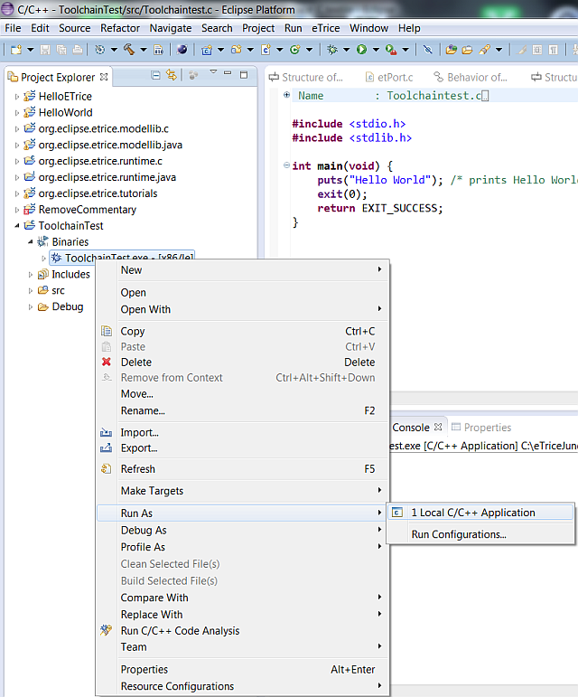

Before you can start with C, some preconditions must be fulfilled:
Once the CDT is installed, the C runtime and model library must be imported. (File->New->Project->eTrice select eTrice C runtime / eTrice C modellib)
The resulting workspace should look like this:
To verify the C tool chain you should generate and run the Hello World example program of the CDT. Activate the C/C++ perspective.

From the main menu select File->New->C Project.

Name the project. Select an Executable->Hello World ANSI C as project type, MinGW GCC as tool chain and click Finish.

Select the new project and click the build button (or right click the project and select Build Project)

The binary should be generated. Run the binary as Local C/C++ Application.

Verify the output.

Remember these steps. In the following Tutorials these steps will be referenced as build and run.
The C runtime system contains some basic functionalities to run the generated models. The so called runtime is common for all C projects. The requirements for several projects may differ depending on the functionality of the model or the resources of the different platforms. Therefore the runtime is configurable in terms of message queue size, frequency and memory alignment. The configuration file etRuntimeConfig.h is located in src/config.
After changing the configuration, the runtime must be built.
Open the properties of the org.eclipse.runtime.c project and select C/C++ Build->Settings->Tool Settings and select Includes.

Verify the include paths
Within the Setting dialog select the tab Build Artefact and select Static Library

Build the runtime by clicking

The runtime library should be created.

For the tutorials one runtime library should be sufficient. For embedded projects it might be necessary to build project specific runtime libraries. In this case a separate project for the runtime should be created. Symbolic links to the sources might be used to avoid duplicate files. Just the configuration file must be duplicated. A specific library file must exist within the project. Such specific runtime libraries might be referenced from several applications.